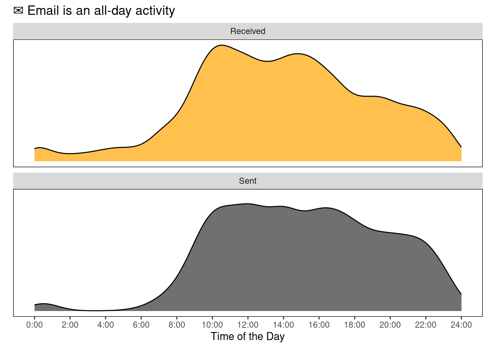
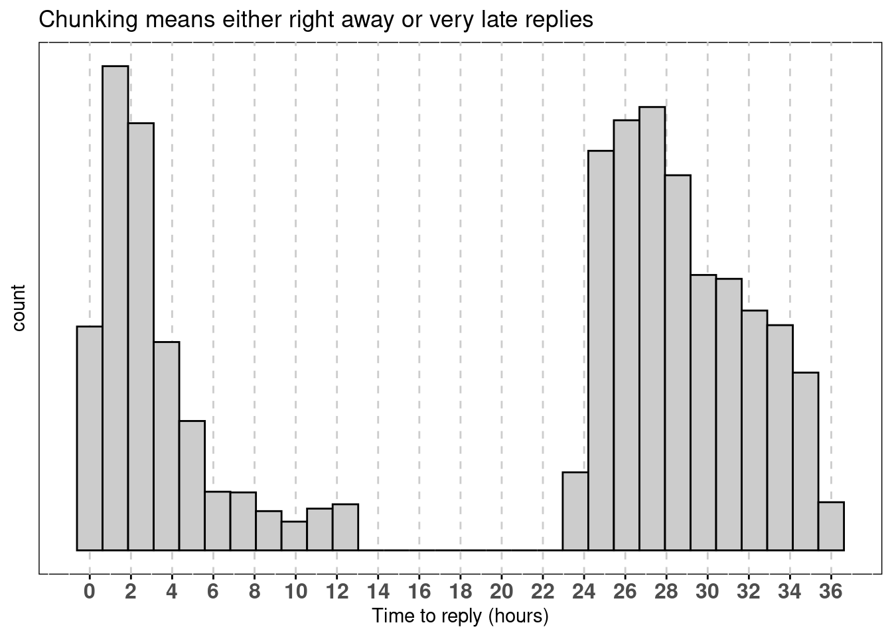

![]()
from
1 Quora Digest <digest-noreply@quora.com>
2 Quora Digest <digest-noreply@quora.com>
3 Quora Digest <digest-noreply@quora.com>
4 =?utf-8?q?Selecci=C3=B3n_de_Quora?= <digest-noreply@quora.com>
5 Quora Digest <digest-noreply@quora.com>
6 Quora Digest <digest-noreply@quora.com>
7 Quora Digest <digest-noreply@quora.com>
8 =?utf-8?q?Selecci=C3=B3n_de_Quora?= <digest-noreply@quora.com>
9 =?utf-8?q?Selecci=C3=B3n_de_Quora?= <digest-noreply@quora.com>
10 =?utf-8?q?Selecci=C3=B3n_de_Quora?= <digest-noreply@quora.com>I am keen on tracking things. Some people call this personal analytics, I call it fun. In this post, I will explore how to extract your email information using python and R. My goal is to do some analysis on the data and, hopefully, explore different visualizations that can inform future behavior.
Emails from Gmail
Reading emails in python is quite simple, we need to import the mailbox library. My file is called correo and comes from downloading my Gmail stuff out of https://takeout.google.com/settings/takeout. It can take a while so be patient.
This should return something that looks like:
X-GM-THRID
X-Gmail-Labels
Received
MIME-Version
Date
To
From
Subject
Content-Type
Content-Disposition
Message-IdLet’s save the info we care about into a new file. We select subject, from, date, to, and some variables that allow us to keep track of things (i.e, labels and threads).
Emails from Thunderbird
I keep 3 accounts in Thunderbird. Using the ImportExportTools Add-on, I exported things into .mbox format. Following a similar procedure to the one depicted above, I got the other three accounts exported to .csv files. Just be sure you select the correct keys (see example below, this might change for other email clients).
Data cleaning
Let’s switch from python to R1.
Unfortunately, emails come tagged (things like "\\?=" and other nasty stuff) and you might have to deal with different encodings (the perks of speaking multiple languages). As an example, let’s see what Quora sends me.
That’s nasty…Let’s do some cleaning. This function comes really handy for text replacement.
We are going to modify the function a bit, we add x as the string we pass for cleaning and we will remove the tags progressively.
We are ready to use our super cool function and clean the text! Not perfect, but gets us 90% of the way.
Let’s see how emails from Quora changed with this new encoding:
from
1 Quora Digest <digest-noreply@quora.com>
2 Quora Digest <digest-noreply@quora.com>
3 Quora Digest <digest-noreply@quora.com>
4 Selección_de_Quora <digest-noreply@quora.com>
5 Quora Digest <digest-noreply@quora.com>
6 Quora Digest <digest-noreply@quora.com>
7 Quora Digest <digest-noreply@quora.com>
8 Selección_de_Quora <digest-noreply@quora.com>
9 Selección_de_Quora <digest-noreply@quora.com>
10 Selección_de_Quora <digest-noreply@quora.com>Let’s filter those from “Received” or “Sent” (in Spanish, “Recibidos” or “Enviado”).
To save you from reading a considerable amount of code, I will load the other accounts and modify them accordingly in the background. I will finally merge everything together. Just enjoy the kitten while the code is running in my machine.

Analysis
There’s still some stuff to clean, but I’d rather go into the analysis. So, let’s get some questions to guide our purpose:
- Who sends me the most emails? Who receives emails from me?
- When do I get emails (mostly)?
- When should I do something about it (aka, reply)?
Warning: We have to dance with parsing dates and times. I highly recommend being familiar with
lubridate(for example, see https://rdrr.io/cran/lubridate/man/parse_date_time.html).
Most frequent senders
Just because I’m curious, let’s take a look at who are the all time senders!
from n
1 Quora 393
2 Maggie 316
3 Yair 216
4 Luciano 173
5 Sarah 167
6 "Bank 161
7 "Amazon.com" 139
8 Mariana 138
9 pubchase@zappylab.com 131
10 "Mendeley" 126It’s cool to know that my lingering feeling (“wow…Quora just spams the hell out of me”) is supported by data. Other big spammers are, of course, the Bank and Amazon. People I work with and friends come high up too. Funny to see Mendeley and Pubchase on the top ten, it’s been a long journey of them sending me papers, thank you for that2.
From me to you
Let’s try to find the people I directly send the most emails to. I tend to send a lot of automatic reminders via email to myself so I removed me from the destination.
to n
1 Mariana 192
2 Mariana 126
3 Yair 86
4 Mélanie 64
5 Beata 59Looks like both my former advisers get most of my output (yes, same name first name, not related).
Working with dates and times
Every time I have to deal with dates, I have a miniature panic attack. As a general rule, you have to have all the variables that you want to use as separate columns (i.e, year, month, day, week_day, time, …). The lubridate package helps a lot, but it’s still quite an effort.
Working only with times of the day, regardless of date itself is problematic. Working with periods is difficult, so as.numeric(x, "hour") is a friend.
Here’s a hint of how the date column in the original data actually looks like. This may or might not look the same way for you, it depends on your date settings.
date
1 Sat, 23 Mar 2019 08:57:48 -0700
2 Sat, 23 Mar 2019 08:57:32 -0700
3 Sat, 23 Mar 2019 20:25:31 -0400
4 Sat, 23 Mar 2019 08:57:46 -0700
5 Sat, 23 Mar 2019 08:57:35 -0700Let’s create all the variables we need. It seems like a lot because it should work out of the box and it doesn’t, but it’s actually somewhat straight-forward to get most of what we want.
Birdseye
Let’s look at how the whole email movement looks like. In the last couple of years, I clearly felt the load rising and rising. The lack of data in the early years is mostly due to me not downloading everything from the Hotmail account (it’s too late, too far in the past to fix :P). Besides, the trend likely holds quite well.

If we split by input and output, we can easily see that the input-output ratio went nuts when I moved to the US.

This is not really surprising, given the amount of unsolicited advertising I started getting since the move. Yes, I’m talking to you again Quora/Amazon/people trying to sell me stuff3. Of course, University related chains likely take a big chunk of the pie.
I don’t feel like parsing out each sender out of the sheer amount. I have had the Gmail and Hotmail accounts for more than 10 years, but the University email is something relatively recent. All in all, considering the time I’ve had each account, the input rate coming from universities worries me. Here are the total email for each account:
Gmail hotmail MIT umass
7481 10331 1297 7122 When
Let’s add the time of the day to the equation. This plot was made using ggbeeswarm package, I highly recommend checking it, it’s pure power. I got help to put the labels in the y axis from ‘00:00’ to ‘24:00’. You can find a toy example in this StackOverflow question.

Daily news
What’s the average number of emails per day? I’m including all the emails in from 2015 to 2019, including those that go directly to trash.

For those looking for some tabulated info, here it is:
| Year | Mean | Min | Max | Mode |
|---|---|---|---|---|
| 2015 | 6.8 | 1 | 30 | 3 |
| 2016 | 10.2 | 1 | 45 | 2 |
| 2017 | 14.5 | 1 | 68 | 2 |
| 2018 | 13.0 | 1 | 66 | 6 |
| 2019 | 18.9 | 1 | 132 | 7 |
I am more inclined to graphics, the following figure shows not only an increasing mean, but, surprisingly, a widening range.

All days were not created equal
Of course, the number of emails somewhat depends on the day of the week. We can easily see a decreasing trend.
NA
NA Mon Tue Wed Thu Fri Sat Sun
NA 4720 4748 4469 4326 3928 1938 1970Although the day of the week has influence on the amount of emails received, the time of the day seems to have a stronger, more permanent effect.

Everything together
If we pool all the data together, it seems that I receive/send emails at all times, although there is more movement in the accounts around 10:00 and 16:30. Overall, the distributions are quite similar4.

Just for fun
Just for the fun of data visualization. Here’s the same plot but adding coord_polar to it. I believe it creates a very weird but good looking thing. It’s not really a clock but there’s something about it I can’t stop looking at5.

Split in two
As you can see from the figures above, the emails in the received bucket have two humps (wink, Bactrian camel, little prince), but I send emails at almost all times (except maybe between 2 AM and 5 AM). This is a bad habit, I should not be sending emails all the time, I should batch to diminish the costs associated with shifting tasks. I could just put a rule of thumb and check emails only once a day (e.g, 12:00:00). However, this might not be the best decision, because it chunks the response time in two very broad categories (either I get back to you somewhat quick, within 2 hours, or I take almost a full day to reply).

Additionally, checking emails only once might make me miss something somewhat fleeting. In general, I want to read things during the time they are relevant (did anybody say free pizza?).
The primary goal, then, is to minimize the times I check/send emails without 1) impacting my perceived response rate and 2) missing out too much info during the day. But that optimization problem is hard to solve and likely a waste of time (trust me, I tried and I’m not that smart).
I believe we can solve it with a rule of thumb anyway. Let’s say, I would check emails twice a day and respond immediately, unless I need to harness some brain power to create an elaborate response6.
I just wrote a “cost function” and calculated the cost for several combinations of times.
Show the code
values <- emails %>%
filter(simple_label=="Received") %>%
mutate(val = as.numeric(seconds_to_period(my_time))) %>%
pull(val)
# calculate linear distance to minimize
dist_to_min <- function(values, possible_times){
min_time <- min(possible_times)
max_time <- max(possible_times)
# do nothing to first batch
corrected_values <- ifelse(values < max_time,
values,
# shift the ones answered on next day, this already gives positive distance
86400 - values + min_time)
to_second <- between(corrected_values, min_time, max_time)
second_batch <- corrected_values[to_second]
first_batch <- corrected_values[!to_second]
# Calculate distance (should be all positive)
dist_second <- max_time - second_batch
dist_first <- ifelse(first_batch < min_time,
min_time - first_batch,
corrected_values)
total_dist <- sum(c(dist_first, dist_second))
return(total_dist)
}Now we can use our dist_to_min function in a loop. We’ll calculate from the first second of the day, to the last (86400) every half hour (1800 sec).
Show the code
# Create the data to iterate over
val <- seq(1, 86400, 1800)
val <- data.frame(t(combn(val,2)))
names(val) <- c("Var1", "Var2")
distance <- numeric(length=nrow(val))
# For loop...
for (i in 1:nrow(val)){
possible_times <- val[i, ]
distance[i] <- dist_to_min(values, possible_times)
}The function calculates the distance we want to minimize. The output looks like this.

Sounds like the combinations we care about are those below 2.5e+8.

All this long post is to say that, from now on, I will be answering my emails in either one of these combinations.
NA first_batch second_batch
NA 1 12H 0M 1S 18H 0M 1S
NA 2 11H 0M 1S 17H 30M 1SA finer grain
Just for the fun of it, let’s take a closer look, a second by second analysis. It seems like machine programmed emails peak at 2 and 3 seconds past midnight.
NA time simple_label Freq
NA 1 00:00:02 Received 77
NA 2 00:00:03 Received 43
NA 3 15:32:51 Received 6
NA 4 10:17:11 Received 5
NA 5 12:05:40 Received 5
NA 6 12:09:11 Received 5
NA 7 12:42:03 Received 5
NA 8 15:30:29 Received 5
NA 9 17:17:06 Received 5
NA 10 09:07:15 Received 4Who are these emails coming from anyway?
# A tibble: 10 × 2
from n
<chr> <int>
1 @mit.edu 33
2 @mit.edu 24
3 @mit.edu 23
4 @mit.edu 10
5 @mit.edu 6
6 @mit.edu 6
7 @mit.edu 4
8 @mit.edu 3
9 @mit.edu 3
10 @mit.edu 2Looks like people at MIT programmed news to be sent seconds after midnight.
Summary
I have had a lot of fun doing this project. I also experienced an enormous amount of frustration with dates. Moreover, every time I thought this project was over, a new little idea for a not so little graph came into my mind. Of course, I went after it. I hope this info helps other people take a look at their own personal analytics and make some decisions. I am somewhat happy I have almost all notifications turned off (hence, no Facebook/Twitter/Slack/whatever appearing as top senders). In fact, turning email notifications off is the first thing I do when I sign up for a service/site, I encourage you to do the same.
Batching is something I will start testing. I can’t control my input but, hopefully, the distributions of my sent email will start matching the times I designated. More importantly, people will not notice, even if the email input keeps increasing.
Some people requested me to do the following scatter-plot. I went with the ggbeeswarm version on the text because I find it more appealing.

I excluded parts of the code because it was too much. I am happy to share if requested!
Sources:
https://jellis18.github.io/post/2018-01-17-mail-analysis/
https://blog.stephenwolfram.com/2012/03/the-personal-analytics-of-my-life/
https://uc-r.github.io/kmeans_clustering
Footnotes
You could actually stay in python (follow https://jellis18.github.io/post/2018-01-17-mail-analysis/). I’m way more comfortable with R for analysis and I only wanted python because I had the copy-paste version of getting my
.mboxfile to.csvfast.↩︎I had signed up for Mendeley before Elsevier bought it…I’m not quite happy about it now, but at least I still get paper recommendations.↩︎
I know I could just unsubscribe to these kind of things, just the way I do with 99% of all other aggressive garbage. I just didn’t do it for these senders.↩︎
Do they look like an elephant inside a boa or a hat?↩︎
Please, if you know how to make the 0:00 or 24:00 appear on the center, reach out! I couldn’t figure it out.↩︎
If you have as much free time as me, you can run a
kmeans(...). My emails actually turned out to be around 2 clusters.↩︎
Reuse
Citation
BibTeX citation:
@online{andina2019,
author = {Andina, Matias},
title = {Email Analysis},
date = {2019-04-06},
url = {https://matiasandina.netlify.app/posts/2019-04-06-email-analysis},
langid = {en}
}
For attribution, please cite this work as:
Andina, Matias. 2019. “Email Analysis.” April 6, 2019. https://matiasandina.netlify.app/posts/2019-04-06-email-analysis.